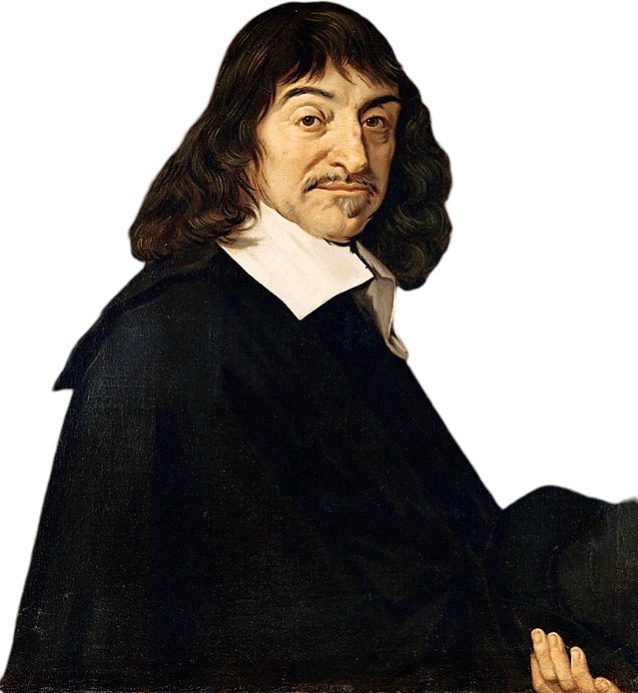
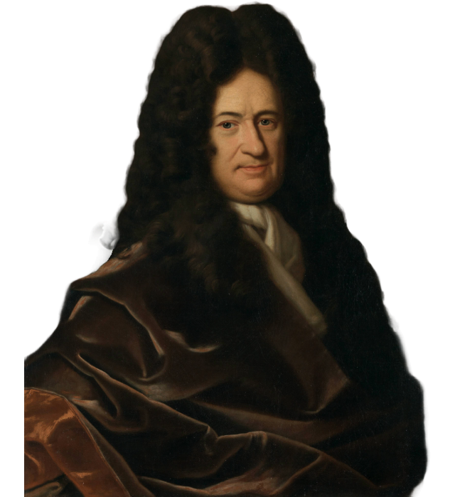
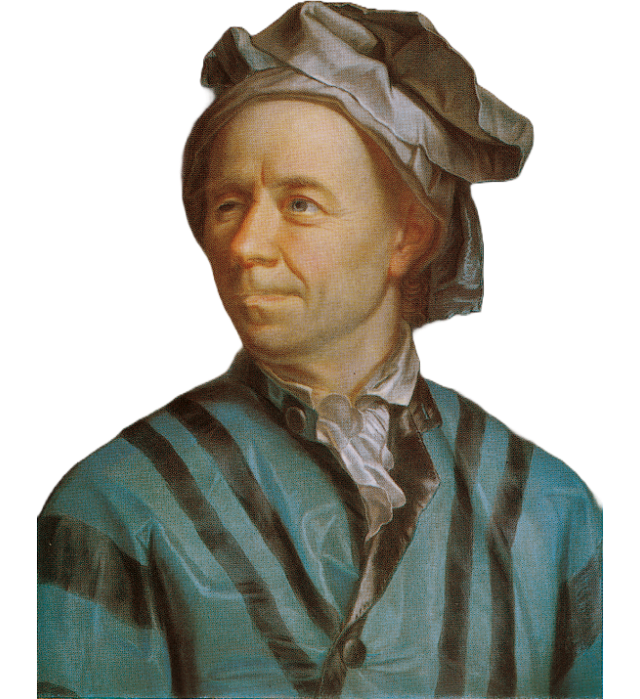

Matematica este arta de a da același nume unor lucruri diferite
- Henri Poincaré -
Iluminismul
Iluminismul a fost o epocă a rațiunii, a științei și a progresului intelectual, în care gândirea matematică a înflorit ca instrument esențial pentru înțelegerea naturii și a legilor universale. În această perioadă, matematica a fost aplicată în mod sistematic în fizică, filozofie și tehnologie, iar multe dintre fundamentele analizei matematice moderne, ale calculului diferențial și integral, au fost stabilite. Această eră a dus la formarea unor teorii matematice vaste, care vor influența profund științele exacte ale secolelor următoare.
René Descartes (1596 – 1650) a fost un filosof, matematician și om de știință francez, unul dintre fondatorii gândirii moderne. Este cunoscut în matematică pentru dezvoltarea geometriei analitice – metoda de a reprezenta curbele și ecuațiile algebrice în plan prin coordonate carteziene, unind algebra cu geometria. O curiozitate este că Descartes obișnuia să lucreze în pat ore întregi, considerând că mintea funcționează cel mai bine în repaus fizic complet.

René Descartes
Blaise Pascal (1623 – 1662) a fost un matematician, fizician și teolog francez, copil-minune și inovator precoce. A contribuit la dezvoltarea teoriei probabilităților împreună cu Pierre de Fermat și a creat primele fundamente ale ceea ce astăzi numim statistică și analiza riscului. Un detaliu fascinant este că Pascal a construit la doar 19 ani una dintre primele mașini de calcul mecanice – „Pascalina” – pentru a-și ajuta tatăl în munca de colectare a impozitelor.
Blaise Pascal
Isaac Newton (1642 – 1726) a fost un matematician, fizician și astronom englez, una dintre cele mai influente figuri din istoria științei. A dezvoltat calculul diferențial și integral (în paralel cu Leibniz), a formulat legile mișcării și ale gravitației universale, și a aplicat matematica într-un mod sistematic pentru a descrie natura. O curiozitate notabilă este că Newton a petrecut mult timp studiind alchimia și interpretarea Bibliei, activități pe care le-a considerat la fel de importante ca știința.
Isaac Newton
Gottfried Wilhelm Leibniz (1646 – 1716) a fost un matematician și filosof german, cunoscut drept co-inventator al calculului infinitesimal. A introdus notațiile moderne pentru derivată și integrală, care sunt folosite și astăzi, și a pus bazele logicei matematice și ale limbajului binar, fundamental pentru informatica actuală. Leibniz a visat la o „lingua universalis” – un limbaj universal bazat pe logică, care ar fi permis rezolvarea tuturor disputelor prin calcul.

Gottfried Wilhelm Leibniz
Leonhard Euler (1707 – 1783) a fost un matematician elvețian prolific, ale cărui lucrări au acoperit aproape toate domeniile matematice cunoscute la acea vreme. A contribuit masiv la analiza matematică, teoria grafului, topologie, trigonometrie și teoria numerelor. A introdus notații precum funcția f(x), constanta e și simbolul Σ pentru sumă. Un fapt remarcabil este că, deși a orbit complet în ultima parte a vieții, a continuat să producă lucrări matematice prin dictare, într-un ritm uimitor.

Leonhard Euler
Carl Friedrich Gauss (1777 – 1855) a fost un matematician german genial, supranumit „prințul matematicienilor”. A adus contribuții fundamentale în algebra, teoria numerelor, statistici, analiză, geodezie și multe altele. A descoperit metoda celor mai mici pătrate și a explorat geometriile neeuclidiene. Se spune că a rezolvat, la vârsta de 7 ani, o problemă de adunare a unei serii de numere naturale într-un mod ingenios, uimindu-și învățătorul – un episod legendar în educația matematică.